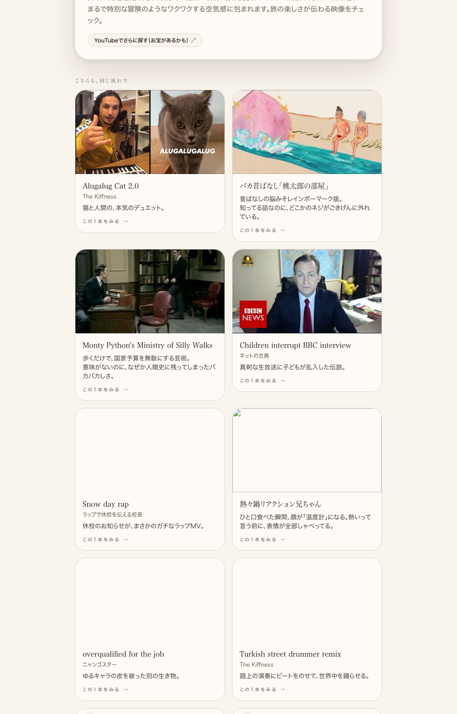
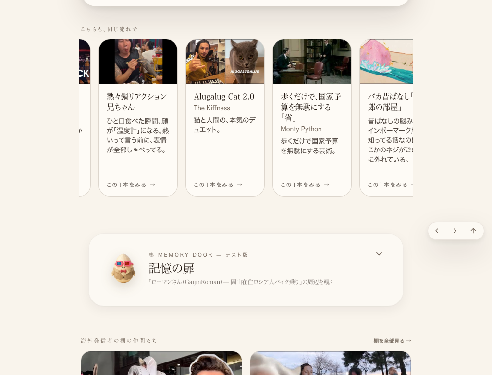

共有資料の一覧
／ 確認ページ #603 「こちらもどうぞ」暴走の巻き戻し：本番で実測比較
#603 「こちらもどうぞ」暴走の巻き戻し：本番で実測比較
2026-09-07 実装・main合流・本番(GitHub Pages)反映まで実測確認
共通部品RelatedCardsRow.tsxを2列グリッドから横スクロール1行(表示10件)へ戻し、カード高さをself-stretchで統一(案件#465・commit d94641f3/80e6db35)。前回はコードの裏取りのみで画像が無く検品ではねられたため、同じページ(gaijin-roman)を壊れていた旧コードと現在の本番で実際にレンダリングし直し、見た目の変化を撮り直した。
② 数字
0
残存するgrid-cols-2(見張りスクリプト実測)
5
呼び出し元の確認件数(全件一致)
1024px
before/after同一幅で実測(PC相当)
③ 実データでのスクリーンショット
前：2列グリッドが4段、カードごとに高さがバラバラ(旧コードを実際にローカルで再現・実測)

後：横1行スクロール、カード高さが揃っている(本番joy-relief-station.lovable.appを実測)

④ 押せるリンク
本番: gaijin-roman(スクショ撮影元そのもの)
https://joy-relief-station.lovable.app/room/card/gaijin-roman
本番: Bee Gees Too Much Heaven
https://joy-relief-station.lovable.app/cover-guide?artist=bee-gees&song=too-much-heaven
前回(一覧作成回)の確認ページ#452
https://tamago2022.github.io/tamago-shinchoku/share/check/452-osusume-runaway-list.html
⑤ 何をどう確かめたか
確認項目
結果
共通部品からgrid-cols-2が消えているか(origin/main実物)
yes
横スクロール1行(overflow-x-auto)・表示10件を維持しているか
yes
カード高さをself-stretchで統一しているか
yes
同一ページ(gaijin-roman)で壊れていた見た目と直った見た目を並べて確認したか
yes
本番(Lovable)配信コードが修正後と一致するか
yes